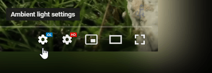

Ambient light for YouTube™
The settings are accessible from the YouTube video player.

If you see no settings button after installation
Please refresh the webpage in the browser.
If after the refresh the Ambient light settings button is still not shown you can create an issue on the
issues list
Alternatively if you have no GitHub account leave your feedback via the
Feedback form
Performance issues
Follow the troubelshoot guide to resolve performance issue
Crash reports & Privacy
A crash report contains only anonymous data and will be deleted after 30 days.
However, we understand that anonymous data is still your data. That's why you can control what it contains via the settings below.
A crash report is allowed to contain:
No crash reports will be sent when all checkboxes are unchecked.
Our privacy policy